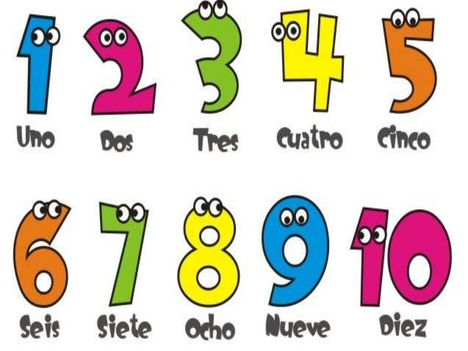

This is how we say "Hello!" in Spanish! Note that letter 'H' is never pronounced - just pretend it doesn't exist when you see it. Try reading this everyday greeting outloud now. Check out this video to make sure you read it correctly. There are many new words in there! Good job!
Now look at the drawing bellow to learn how to say your name and ask for other people's names.
Here focus on letter 'LL' in the word 'llamas'. It is pronounced almost the same as 'Y' in 'yes'. Depending on the country they grew up in, Spanish speaking people will pronounce this letter slightly different - but don't worry about that now.
Watchthis video to hear correct pronunciation and practice.
Let's learn how to count to 10! Observe the image below and listen to this funny song. Sing along!
